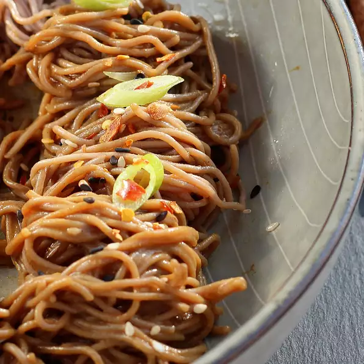

Spicy Cold Soba Noodles

These Spicy cold soba noodles are the perfect dish to fill anyone up, you can accompany them by adding chicken,shrimp, and beef. You can also adjust the heat of the dish depending how much chili oil you use.
Ingredients
- ⅔ cup soy sauce
- 2 tablespoons molasses
- ½ cup sesame oil
- ½ cup sesame tahini
- 6 tablespoons balsamic vinegar
- 2 tablespoons chili oil, or more to taste
- ½ cup sliced scallions, divided
- 1 pound dried soba noodles
- 1 tablespoon sesame seeds
Steps
- Step 1:
Bring soy sauce to a boil in a small saucepan over medium-high heat. Reduce heat to medium-low and simmer until reduced by half, 10 to 15 minutes. Remove soy sauce from the heat and stir in molasses.
- Step 2:
Whisk sesame oil, tahini, balsamic vinegar, and chili oil together in a medium mixing bowl. Slowly whisk in soy sauce mixture. Stir in 1/2 of the scallions.
- Step 3:
Bring a large pot of lightly salted water to a boil. Add soba noodles and cook, stirring occasionally, until tender yet firm to the bite, about 3 minutes. Immediately drain and rinse thoroughly in cold water.
- Step 4:
Combine noodles and sauce. Sprinkle remaining scallions and sesame seeds over top and refrigerate until cold, at least 30 minutes.